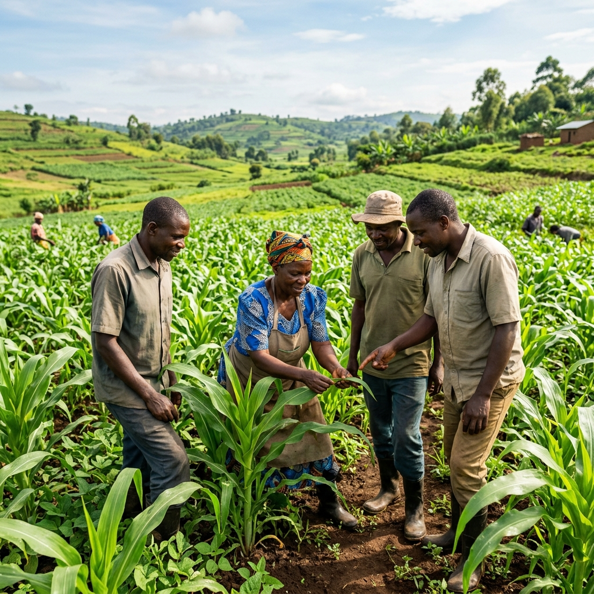
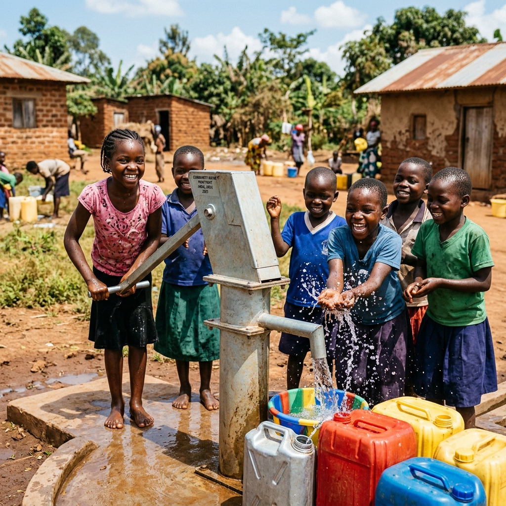
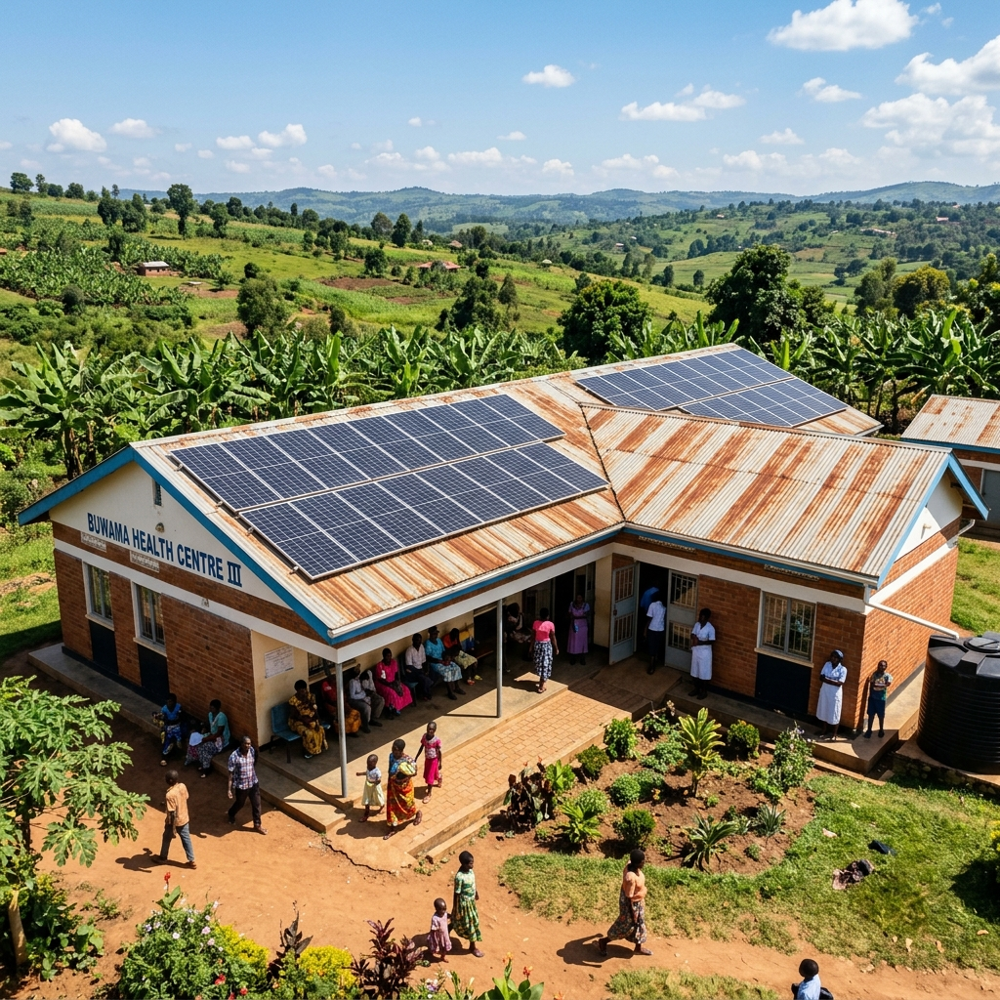
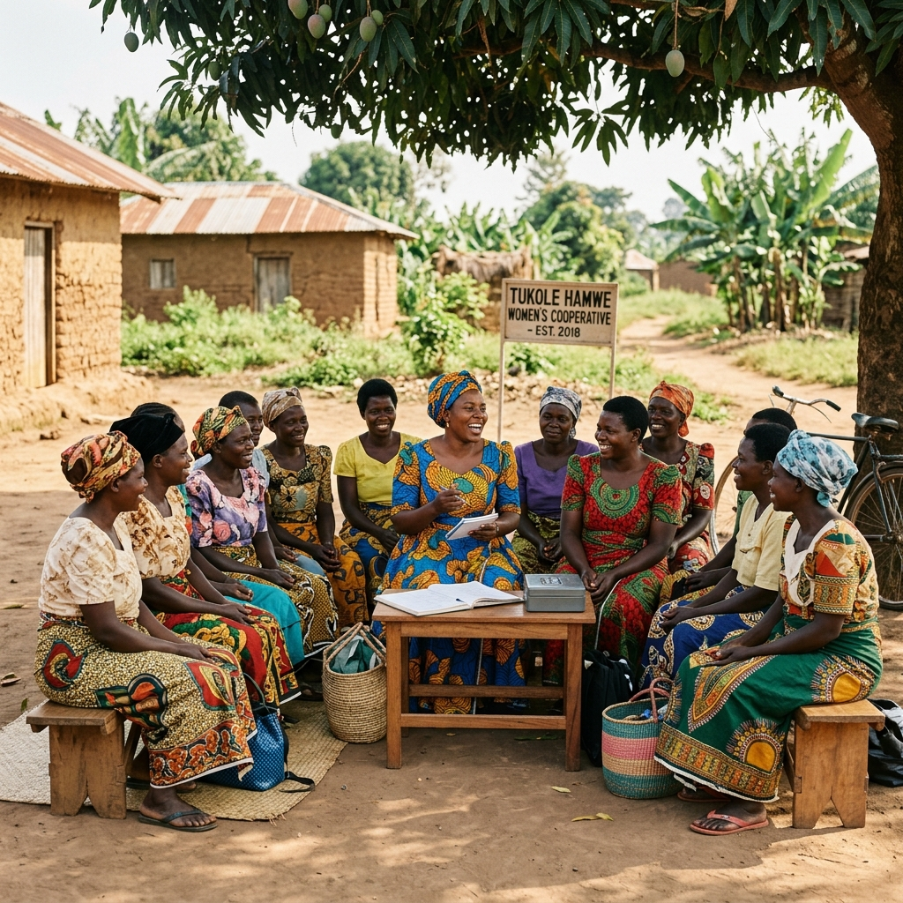

PROGRAM 01
Climate-Smart Agriculture & Food Security
Drought-tolerant seed, soil health, and farmer field schools.
Jump to details →Each program is co-designed with communities, aligned to the SDGs, and measured against outcomes, not activity counts.

Drought-tolerant seed, soil health, and farmer field schools.
Jump to details →
Boreholes, rainwater harvesting, and WASH committees.
Jump to details →
Solar for schools and clinics; efficient cookstoves.
Jump to details →
Savings groups, green enterprises, women-led cooperatives.
Jump to details →Most families in our districts depend on rain-fed farming. As seasons grow less predictable, resilience on the farm is food security at home.
We work with farmer groups on drought-tolerant seed varieties, soil and water conservation, and post-harvest handling, delivered through farmer field schools so knowledge stays in the community.
Better seed and soil health without degrading the land.
Storage and handling that protect what farmers grow.
Farmer field schools that keep training in the community.
Boreholes and rainwater harvesting that cut the daily walk.
Community WASH committees trained to maintain each point.
Sanitation and hygiene that reduce waterborne disease.
A water point is only as good as the committee that maintains it. We build both.
We install boreholes and rainwater harvesting, and we train community WASH committees so the infrastructure lasts long after installation, with sanitation and hygiene woven through.
Clean, reliable power changes what a clinic or a school can do after dark.
We install solar systems at rural schools and health centres, and distribute efficient cookstoves that cut both household fuel costs and the indoor smoke that harms women and children most.
Solar for clinics and schools, lights, cold chain, learning.
Efficient stoves that use less firewood and emit less smoke.
Savings families and institutions can redirect elsewhere.
Village savings that put capital within reach.
Tree nurseries, briquettes, and other low-carbon income.
Cooperatives led by the women who drive local resilience.
Climate action lasts when it pays. We help communities turn it into income.
Through savings groups, green enterprises, and women-led cooperatives, we help households build stable, low-carbon livelihoods that strengthen resilience to climate and economic shocks.
Fund seed, a water point, solar power, or a green enterprise.